Noticias y Actividades
Mantente al día con nuestro trabajo, campañas y logros más recientes.

WARMI participó en Mesa de Actores Clave junto a la Defensoría del Pueblo para abordar el cumplimiento de la Ley VIH y problemáticas del sector
WARMI reafirmó su compromiso de continuar participando en instancias
Leer más
WARMI realizó actividades de articulación institucional en Chimoré para fortalecer el acceso a derechos en el Trópico de Cochabamba
Durante estas actividades, el equipo de WARMI sostuvo encuentros de coordinación
Leer más
WARMI realizó visitas a locales de Chimoré para recolectar información, brindar apoyo y fortalecer la prevención de VIH e ITS
WARMI destacó que estas acciones son parte de su enfoque de trabajo territorial y acompañamiento, orientado a garantizar dignidad,
Leer más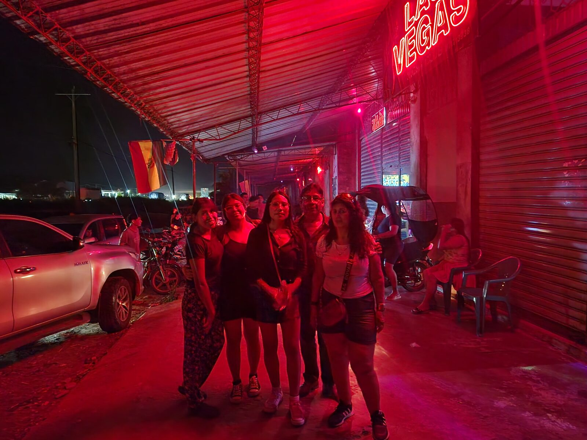
warmi en la semana de la prueba
.
Leer más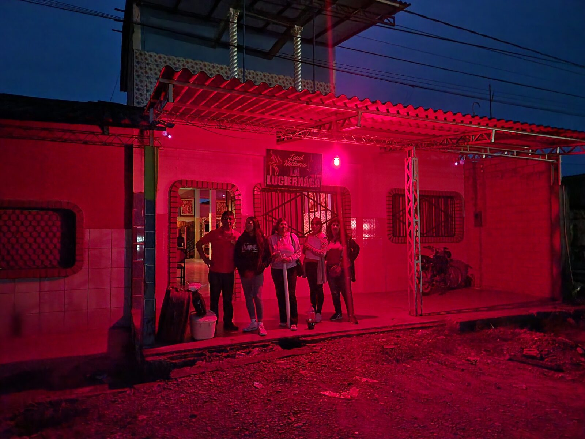
warmi realiza visitas, a las compañeras del tropico de cochabamba
.
Leer más.png)
Invitación: Taller Gratuito en Ivirgarzama (9 Nov) - Warmi Amts
Con el objetivo de acercar información clara y rutas de atención sin estigma, el equipo de WARMI A.M.T.S. realizó un recorrido por varios locales de Cochabamba. La jornada combinó prevención en salud sexual, diálogo directo y espacios de escucha para relevar necesidades y fortalecer la organización comunitaria.
Leer más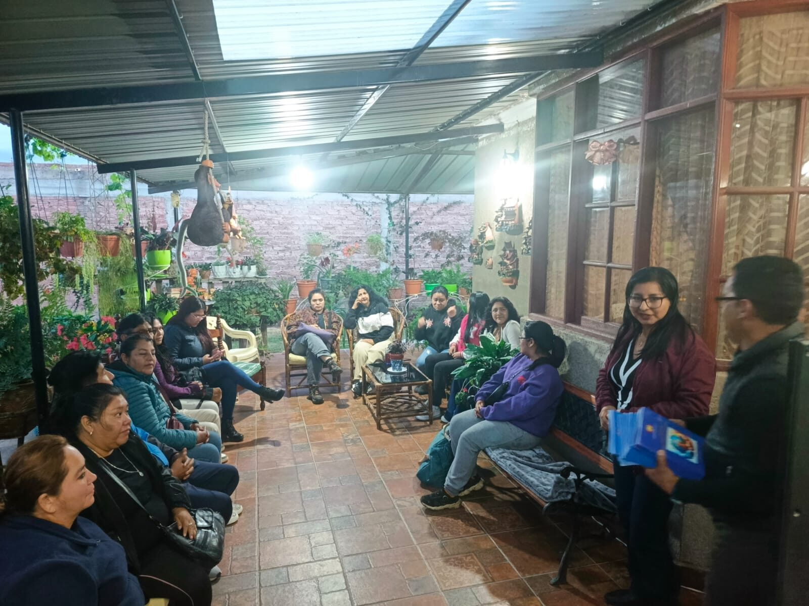
WARMI participó en conversatorio y taller sobre VIH y VPH impulsado por Vivo en Positivo
WARMI A.M.T.S. fue parte del conversatorio y taller “Hablemos Claro: Sexualidad sin tabúes”, desarrollados por la organización Vivo en Positivo, con enfoque en VIH y VPH/HPV desde una mirada de prevención, derechos y no estigmatización.
Leer más
WARMI realizó jornada comunitaria por la salud y derechos de trabajadoras sexuales en Cochabamba
Que tus prejuicios no pesen más que mis derechos”. Con ese mensaje, WARMI A.M.T.S. cerró una nueva fecha de trabajo territorial en la ciudad, donde el equipo y sus aliadas instalaron un stand informativo, recorrieron locales y sostuvieron diálogos con compañeras y público para promover salud sexual sin estigma y el reconocimiento del trabajo sexual como trabajo.
Leer más
WARMI realiza recorrido de prevención y escucha activa en locales nocturnos
Con el objetivo de acercar información clara y rutas de atención sin estigma, el equipo de WARMI A.M.T.S. realizó un recorrido por varios locales de Cochabamba. La jornada combinó prevención
Leer más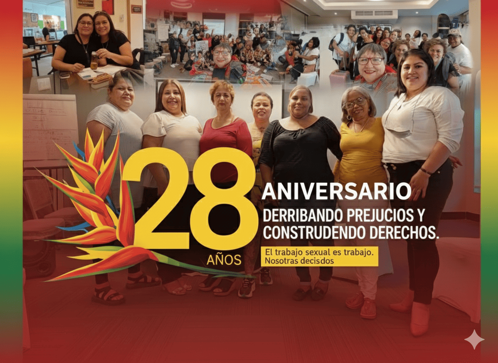
WARMI celebra 28 años de RedTraSex: una historia regional que construye derechos
WARMI A.M.T.S. se suma con orgullo a la conmemoración de los 28 años de la Red de Mujeres Trabajadoras Sexuales de Latinoamérica y el Caribe (RedTraSex)
Leer más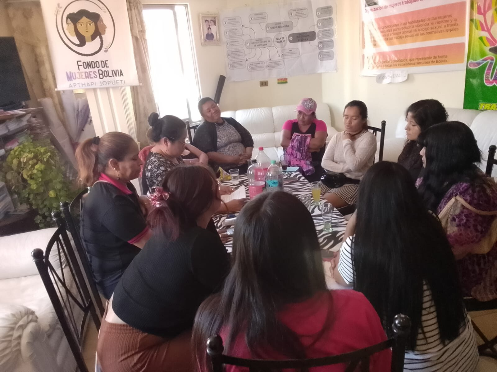
WARMI desarrolla grupo focal sobre maternidad, embarazo y aborto para fortalecer políticas de cuidado y acceso a derechos
EEn el marco de nuestras acciones de investigación y sensibilización, WARMI A.M.T.S. llevó a cabo un grupo focal sobre maternidad, embarazo y aborto
Leer más.jpg)
WARMI realiza recorrido nocturno de prevención y escucha activa en locales
Con el objetivo de acercar información y facilitar insumos de cuidado, el equipo de WARMI A.M.T.S. realizó un recorrido nocturno por diversos locales de Cochabamba.
Leer más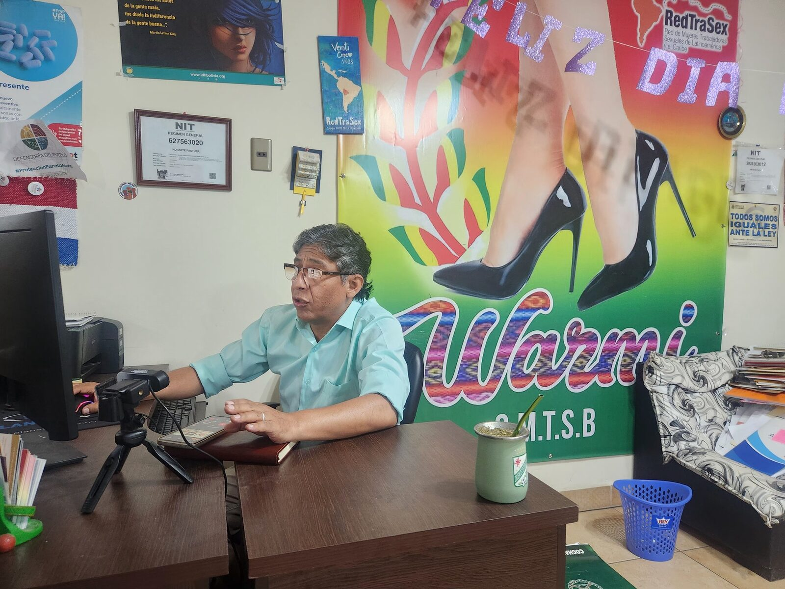
Jornada virtual sobre “Síndrome de flujo: Gonorrea, Clamidia, Tricomoniasis y otras ITS
En el marco de las jornadas de capacitación en salud sexual y derechos, la Dirección de Carrera de Derecho – UMSS, WARMI A.M.T.S.
Leer más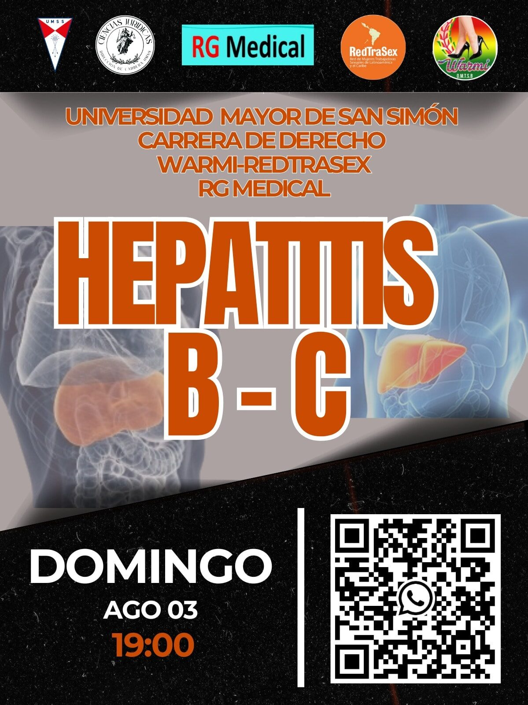
Taller sobre Hepatitis B y C fortalece la prevención y el trabajo conjunto
WARMI A.M.T.S. realizó el Taller sobre Hepatitis B y Hepatitis C, una jornada de aprendizaje y diálogo orientada a reforzar la prevención, el acceso a la información
Leer másTaller sobre VIH–SIDA convoca a la comunidad y fortalece alianzas interinstitucionales
En el marco de nuestras acciones de prevención y salud comunitaria, WARMI A.M.T.S. realizó un Taller sobre VIH–SIDA, que reunió a participantes de diversos sectores.
Leer más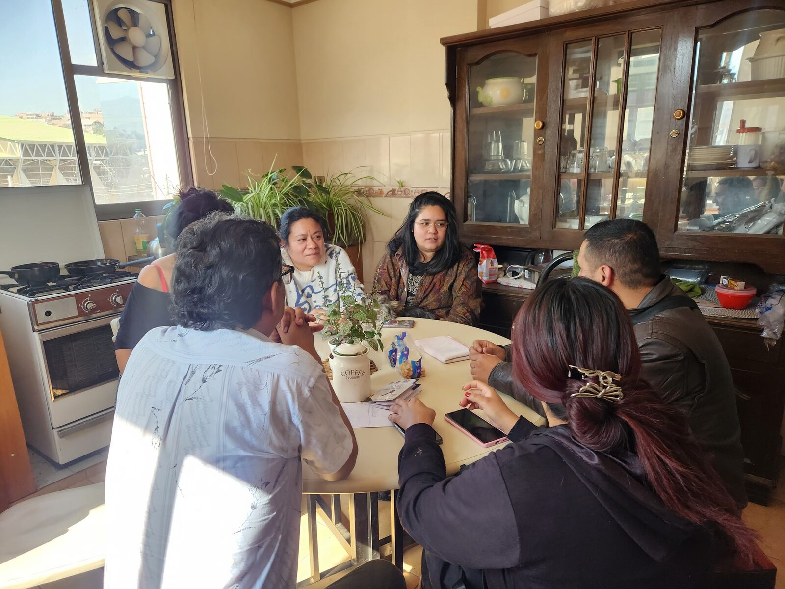
Warmi y la Carrera de Derecho de la UMSS sientan bases para una colaboración académica y social
realizamos una acuerdo con la carrera de derecho de la UMSS.
Leer más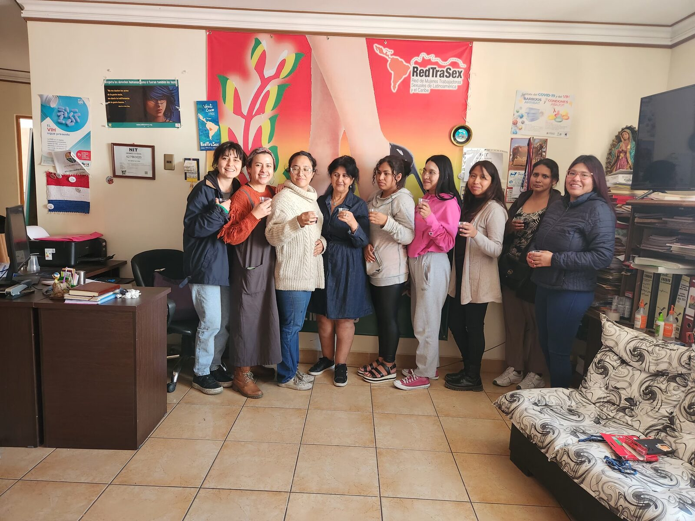
WARMI y el Colectivo Las Pulgas lanzan el podcast “Nos Dicen P*tas”
En un ambiente cargado de emoción y sororidad, WARMI A.M.T.S., junto al Colectivo Las Pulgas, presentó oficialmente el podcast “Nos Dicen P*tas” en las oficinas de la organización. La iniciativa nace para abrir un espacio de palabra y memoria, donde las trabajadoras sexuales toman la voz para narrar sus experiencias, reflexiones y demandas desde una mirada propia.
Leer más
Warmi y la Policía Acuerdan Talleres de Sensibilización
En un paso clave hacia la construcción de puentes institucionales, se acordó un ciclo de talleres con la Dirección de DD.HH. de la Policía.
Leer más.jpeg)
Warmi Fortalece Alianza con la Defensoría del Pueblo
Nos reunimos con el Defensor del Pueblo de Cochabamba para delinear nuevas vías de colaboración y protección de derechos.
Leer más.jpeg)
Acuerdo con la FELCV para Proteger a Trabajadoras Sexuales
Se trabajará en un convenio interinstitucional para crear rutas de atención más rápidas y seguras contra la violencia de género.
Leer más.jpeg)
Warmi Dice Presente en la Marcha del Orgullo
Participamos activamente en la marcha para celebrar la diversidad y exigir igualdad para todas las identidades.
Leer más
Exitoso Taller sobre VPH en Colaboración con la UMSS
Junto a la Carrera de Derecho y el Dr. Iván Rivera, realizamos un taller informativo sobre prevención y detección del VPH.
Leer más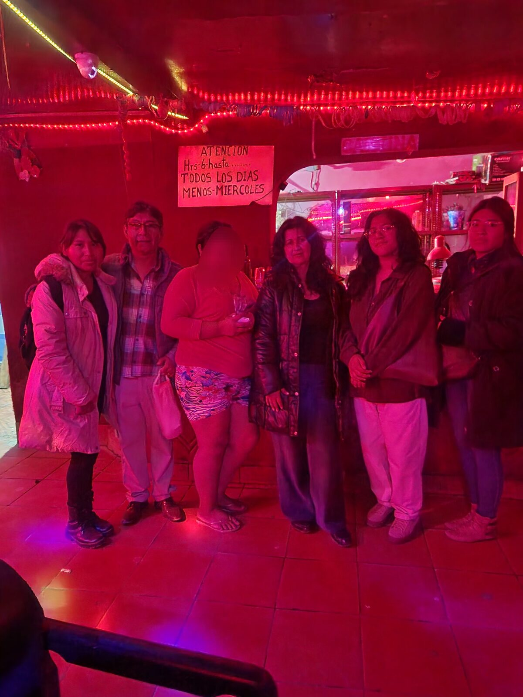
Realizamos Visitas de Acompañamiento en Quillacollo
Nuestro equipo visitó 3 locales y conversó con 20 compañeras para escuchar sus necesidades y brindar apoyo directo.
Leer más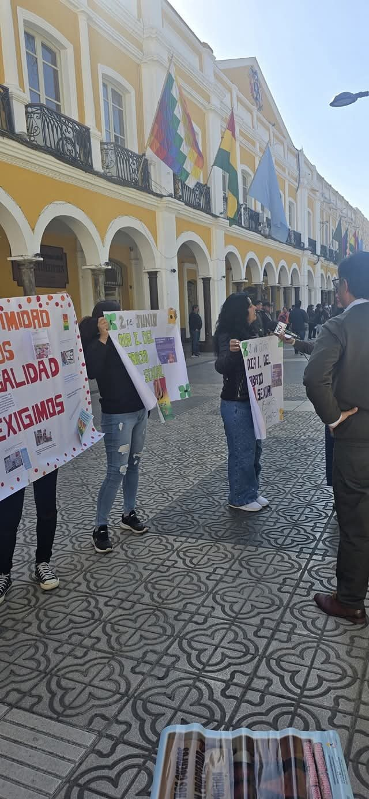
Warmi Exige Derechos con un Plantón Pacífico
En el Día Internacional del Trabajo Sexual, visibilizamos la urgente necesidad de crear normativas que nos protejan.
Leer más
Taller sobre ITS y Salud Mental con Presencia del SEDES
Junto a nuestra psicóloga aliada y el Director del Programa de VIH, abordamos el autocuidado físico y emocional.
Leer más